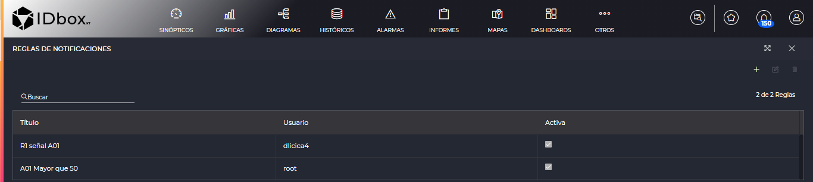
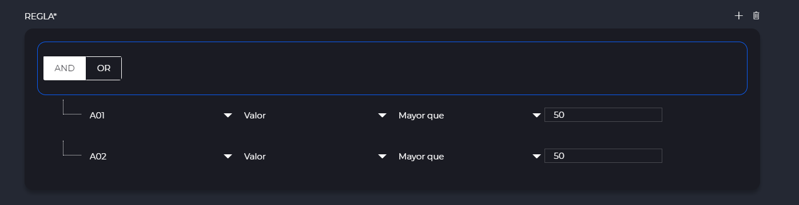
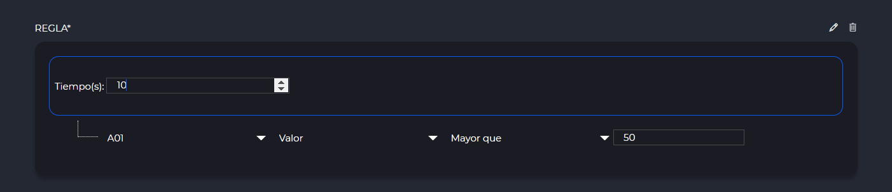
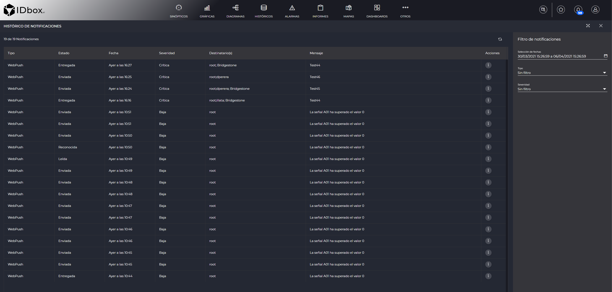

NOTIFICATIONS
- 1 Introduction
- 2 Notification rules
- 2.1 List of rules
- 2.2 Edit rules
- 2.2.1 Rule
- 2.2.1 Actions
- 3 Notification history
1 Introduction
Notifications will inform us of events in our system.
You can find the notifications section in the Control Panel.

2 Notification rules
The notification rules section will allow us to define the rules by which we will receive notifications.
2.1 List of rules
As we enter the notification rules section, we will see a grid listing the rules that have been registered. We can use the search engine to filter the rules. Using the plus button , we can add a rule, with the , edit it and delete it with .

2.2 Edit notification rules
When we add or edit a rule, we will enter this section.
When we are done with it we can save it using the save button on the toolbar.

In the first section we find the following parameters:
- Name: Indicates the name of the rule.
- Signals: Here we will choose the signals that will be part of the rule. Clicking on the field will open the signal selector.
- Active: If checked, we will receive the notifications that comply with this rule. Otherwise we will not receive these notifications.
2.2.1 Rule
The “Rule” section is where we define the set of actions that will trigger that notification to be sent.
The most basic rule consists of a single operator of type “Predicate”. A predicate has the following options:
The first combo indicates the signal involved in the predicate. All the signals chosen in the first section will be listed here. In the second combo we can set whether we want to make the rule depending on the value of that signal or the state of that signal. In case of choosing value, we can select in a third combo a comparison operator (e.g. greater than, greater than or equal to) and the value we want to compare.
For example in the case of the following image we consider that this rule will be sent if the signal A01 passes the threshold of 50.

Once we understand the basic operation, we can complicate it as much as we want by means of “Condition” or “Time” operators. This will form a tree of operators.
To add any operator we will click on an existing operator to select it and then the options to add will appear when we click on the .

To delete any of these operators and all those hanging from it, just select it and press .
The “Condition” operator will allow us to set any number of operators as children and these children can be of type “Predicate”, “Condition” or “Time”. In case of selecting AND, all the children must be fulfilled for the condition to be met. In case of OR, if any of the children are fulfilled, the condition will be fulfilled.
The example in the following image will trigger the notification if both signals A01 and A02 are greater than 50.

By means of the “Time” operator we will indicate that we will send the notification if a predicate or condition is maintained in time during the seconds specified in the time operator. Therefore it can only have a child of type “Predicate” or “Condition”.
In the following example, the notification will be triggered when the signal A01 is greater than 50 for 10 seconds in a row.

2.2.2 Actions
The actions grid will allow us to define the actions that will be executed if the notification is sent because the rule is fulfilled. Actions will be added with the plus button , edited with and deleted with .
Each system can have its own actions. As standard we usually have at least the “Push”, “Email” and if we have IDboxRT mobile application, the “MobilePush”.

Push notifications have the following fields:
- Users: List of users to whom the notification will be sent. They can be written separating them by ‘;’ or if you click on the magnifying glass , it will open a user selector so that we can select the ones we want.
- Security Groups: List of security groups to which you will be notified if you belong. They can be written separating them by ‘;’ or if you click on the magnifying glass , it will open a selector of security groups so that we can select the ones we want.
- Message: Text to be sent in the notification.
- Severity: Indicates the severity of the notification. It can have the values “Trivial”, “Low”, “Medium”, “High” or “Critical”.
- Ack: Indicates that this notification will require acknowledgement.
- Activation Type: Possible values are “Activation”, “Deactivation” or “Status Change”. Indicates whether the notification will be triggered when the condition is activated (with the value “Activation”), when the condition is deactivated (with the value “Deactivation”), or whether it will be triggered both when activated and when deactivated (with the value “Status Change”).
- Resend: Indicates that the notification will be resent periodically if the condition is met.
- Forwarding time: Time in seconds that will elapse between each forwarding.
The fields of the “MobilePush” type are the same, but the notification will be sent to the mobile if we are logged into the IDboxRT mobile application.
Additionally we may have the “Email” type notifications. These notifications are different because they will send an email to the user selected in the “Recipients” field and we can put the fields of the emails: “CC”, “BCC” and “Subject”.
The “Test” button can be used to send a test notification without the need for the condition to be met.
3 Notification history
In this section we will be able to see the history of the notifications of the logged in user or those that are directed to any of the security groups to which our user belongs.
As we enter we will see the last week of data in the grid.

On the right we can also change the following filters:
- Date selection: will allow us to modify the dates between which we consult the data.
- Type: It will allow us to filter by a specific type of notification.
- Severity: Filter by the severity of the notification.
3.1 Notification follow-up
If we click on the information button in the notification history grid, a window will pop up showing the status of the notification.